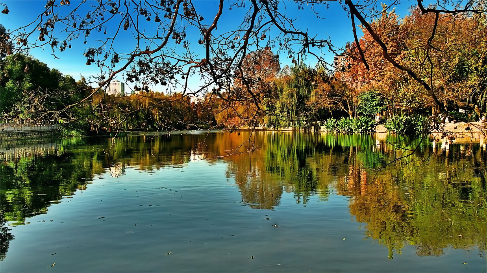

云南大学
翠湖位于昆明市五华山西麓，占地面积352亩。湖东北有“九泉所出，汇而成池”，故又名“九龙池”。堤畔遍植垂柳，柳枝拂面，湖内多种荷花，藕花飘香。
翠湖位于昆明市五华山西麓，占地面积352亩。湖东北有“九泉所出，汇而成池”，故又名“九龙池”。堤畔遍植垂柳，柳枝拂面，湖内多种荷花，藕花飘香，旧有“十亩荷花鱼世界，半城杨柳抚楼台”之联，被誉为“城中碧玉”。有亭、台、回廊、曲桥等建筑，其建筑精致玲珑，亭阁均有匾对，歌咏园中的景观。
眼下的翠湖一片郁郁葱葱，山明柳绿，多姿多彩。夏日清风自来，行走在翠湖绿柳清幽之中，根本感受不到夏日炎炎的火热。绿水清幽之中，倒影一片郁郁葱葱。翠绿的柳叶悬挂枝头倒映湖中，来往的人群或悠闲漫步或来去匆匆，碧绿的荷叶蓄发含苞待放之势，等待着开出娇艳的花姿。溪桥柳细、蓝天白云、夏日阳光、绿水青山、湖波荡漾。湖泊中浮萍绿中带红，红中黛绿，万绿红中一点红，不爱深红爱浅红。
翠湖荷塘里的荷叶绿得发光发亮，绿得生机盎然，为数不多的荷花已经含苞待放，沐浴着夏日阳光。
云南大学地球科学学院@2021~2022